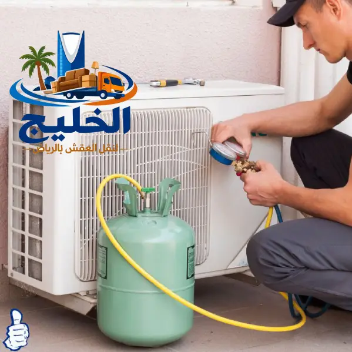

خدمة شحن فريون احترافية لأجهزة التكييف، باستخدام أحدث أجهزة كشف التسرب الإلكتروني. نضمن لك تبريداً قوياً وتوفيراً في استهلاك الكهرباء.
أجهزة حساسة تكشف التسرب بدقة عالية جداً، حتى من أصغر الثقوب في مواسير النحاس.
نقوم بشحن غاز R22 و R410a والأنواع الحديثة بكميات دقيقة حسب قدرة المكيف.
تسعير عادل بدون رسوم خفية، مع معاينة مجانية وتحديد السعر قبل البدء.
هل يعاني مكيفك من ضعف في التبريد أو يخرج هواء بدرجة حرارة عادية؟ قد يكون السبب هو نقص غاز الفريون. شركة الخليج للتبريد تقدم لك خدمة شحن فريون وكشف تسريب المكيفات بالرياض باستخدام أحدث الأجهزة الإلكترونية التي تكشف التسرب بدقة متناهية.
نقوم بشحن جميع أنواع غازات التبريد (R22, R410a, R32) لمكيفات السبليت والشباك والمركزي، مع إصلاح أي تسريبات قبل الشحن لضمان حل دائم وعدم تكرار المشكلة. فريقنا الفني يمتلك خبرة تزيد عن 10 سنوات في تشخيص أعطال الفريون بدقة.

الهواء الخارج من المكيف ليس بارداً كما كان سابقاً رغم تشغيله على درجة حرارة منخفضة.
تراكم الثلج على المواسير النحاسية أو الوحدة الخارجية يدل على نقص الفريون.
الضاغط يعمل لفترات أطول لتعويض نقص التبريد مما يزيد الاستهلاك.
وجود بقع زيت على مواسير النحاس دليل مؤكد على وجود تسريب فريون.
نستخدم جهاز كشف تسرب الغاز الحساس الذي يكتشف حتى أقل من 0.5 أوقية في السنة، لتحديد مكان التسرب بدقة دون تخريب.
بعد تحديد مكان التسرب، نقوم بإصلاحه بلحام نيتروجين لمنع الأكسدة، واختبار الضغط للتأكد من عدم وجود تسريبات أخرى.
نقوم بشحن الكمية المناسبة حسب قدرة المكيف باستخدام ميزان إلكتروني دقيق لضمان الكمية المثالية دون زيادة أو نقصان.
قبل شحن الفريون، نقوم بشفط الهواء والرطوبة من النظام باستخدام مضخة تفريغ قوية لضمان كفاءة التبريد.
بعد الشحن، نقوم بفحص ضغوط العمل، وقياس درجة حرارة الهواء الخارج، والتأكد من عدم وجود أي تسريب متبقي.
كثير من العملاء يعانون من شحن الفريون أكثر من مرة بسبب عدم إصلاح التسريب الأصلي. نحن نضمن لك حلاً جذرياً من خلال:
نحن لا نشحن الفريون دون إصلاح التسريب أولاً – نضمن لك عدم العودة لنفس المشكلة.
فني متخصص يزور موقعك، يفحص ضغط الفريون ويشخص المشكلة الأولية.
باستخدام جهاز الكشف الحساس، يتم مسح جميع نقاط الوصل والمواسير.
لحام أو استبدال الجزء المتسرب، ثم اختبار الضغط بالنيتروجين للتأكد.
تشغيل مضخة التفريغ لمدة 20-30 دقيقة لتفريغ الهواء والمياه من الدائرة.
شحن الغاز باستخدام ميزان إلكتروني حسب نوع المكيف وقدرته.
تشغيل المكيف، قياس درجات الحرارة، وفحص نهائي للتسريب.
* الأسعار شاملة الضريبة ومعاينة مجانية قبل البدء.
نمتلك أجهزة كشف تسرب إلكترونية حساسة جداً لتحديد أي تسريب بدقة.
نستخدم فريون أصلي 100% من مصادر موثوقة لضمان كفاءة التبريد.
شحن الفريون بالكمية المناسبة يقلل من استهلاك الكهرباء حتى 30%.
نقدم تقريراً بالقراءات قبل وبعد الشحن وحالة النظام.
فريق جاهز للاستجابة الفورية لبلاغات أعطال الفريون.
ضمان على إصلاح التسريب وجودة الشحن لمدة 6 أشهر.
احجز خدمة كشف تسريب وشحن فريون الآن – فنيون متخصصون وأسعار تنافسية
النظام المغلق لا يفقد الفريون أبداً إذا كان سليماً. إذا كان المكيف يحتاج شحن متكرر، فهذا يعني وجود تسريب يجب إصلاحه. نحن نضمن إصلاح التسريب نهائياً.
لا ننصح بذلك، لأن شحن الفريون دون إصلاح التسريب يؤدي إلى خسارة الغاز مرة أخرى خلال أسابيع، وتكلفة إضافية عليك. نقوم أولاً بكشف التسريب وإصلاحه ثم الشحن.
R22 يستخدم في المكيفات القديمة (قبل 2015) وهو أقل كفاءة وأكثر ضرراً على البيئة. R410a يستخدم في المكيفات الحديثة، أكثر كفاءة وضغط تشغيل أعلى. يجب استخدام النوع المناسب للمكيف.
نعم، نقدم ضماناً لمدة 6 أشهر على جودة الشحن وخلو النظام من التسريبات بعد إصلاحها.
فحص التسريب الإلكتروني يستغرق من 20 إلى 40 دقيقة حسب حجم النظام وتعقيد المواسير.
شركة الخليج للتبريد – خبراء شحن فريون وكشف تسريب المكيفات بالرياض. نضمن لك تبريداً مثالياً وتوفيراً في استهلاك الكهرباء. اتصل بنا اليوم لحل جذري لمشكلة ضعف التبريد.